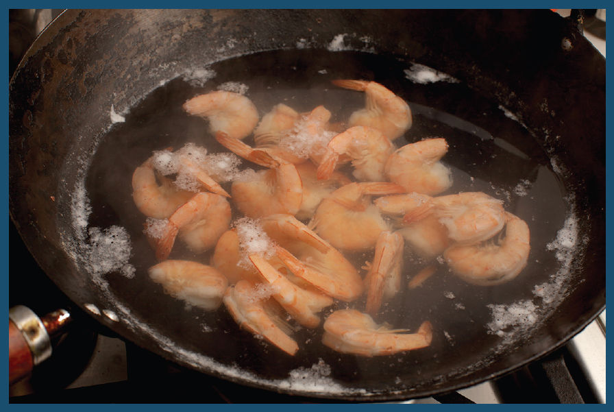
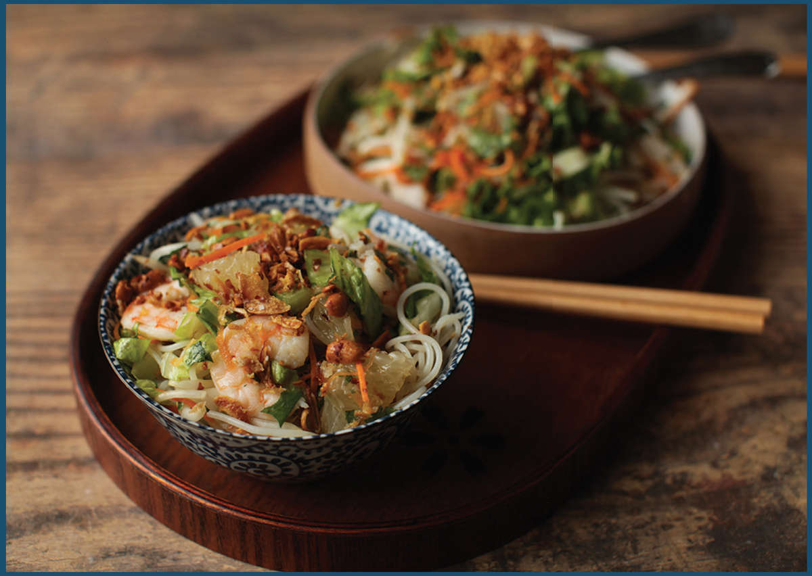

BÚN TRN TÔM (VIETNAMESE SHRIMP AND RICE NOODLE SALAD) WITH CITRUS AND HERBS
Vietnamese salads frequently combine ingredients with a wildly diverse range of textures and flavors with light, punchy dressings, making them wonderful for a quick, light meal. This one, made with cold rice noodles, poached shrimp, pomelo, peanuts, and tons of herbs, is inspired by one that Adri and I ate in Saigon as we hunkered down during one of the torrential flash storms that crop up during the summer monsoon season. It’s simultaneously light and refreshing while being completely satisfying as a meal in itself.

I start by poaching shrimp very gently in water. To do this, I like to add shell-on shrimp directly to cold water, then heat it up in a wok over medium-high heat just until the water shows the very first hint of simmering. I shut off the water, let the shrimp sit for 2 minutes, then drain them and rinse under cold water to chill them. By slowly bringing them up to temperature, you cook them far more evenly than if you drop them into already-boiling water, which has a tendency to turn the exteriors rubbery and bouncy before the shrimp have a chance to cook all the way through. (See here for tips on shopping for shrimp.)
Bún—the Vietnamese word for “rice vermicelli”—are very easy to prepare: just soak them in hot water for a couple minutes, then rinse them in cold water to chill. For this salad, I soak them right in the poaching liquid from the shrimp, to allow them to pick up some of that shrimp flavor.
With the shrimp and noodles done, I start constructing the salad in a large serving bowl, starting with crisp shredded lettuce or cabbage at the bottom, followed by the noodles. I then top the noodles with finely julienned carrots (or, if you happen to have them already made, đ chua—lightly pickled carrots and daikon radish), fresh mung bean sprouts, slivered cucumbers, big handfuls of mint and cilantro (you could also use basil here), and some grapefruit that I’ve peeled and cut into bite-sized chunks (or, if I can find it, pomelo, grapefruit’s larger, dryer, slightly less bitter cousin). Finally, for crunch, I sprinkle some crushed roasted or fried peanuts and fried shallots on top.
chua—lightly pickled carrots and daikon radish), fresh mung bean sprouts, slivered cucumbers, big handfuls of mint and cilantro (you could also use basil here), and some grapefruit that I’ve peeled and cut into bite-sized chunks (or, if I can find it, pomelo, grapefruit’s larger, dryer, slightly less bitter cousin). Finally, for crunch, I sprinkle some crushed roasted or fried peanuts and fried shallots on top.
For the dressing, I use classic Vietnamese n c châ´m, an all-purpose dipping sauce and dressing made with lime juice, garlic, sugar, and fish sauce.
c châ´m, an all-purpose dipping sauce and dressing made with lime juice, garlic, sugar, and fish sauce.
